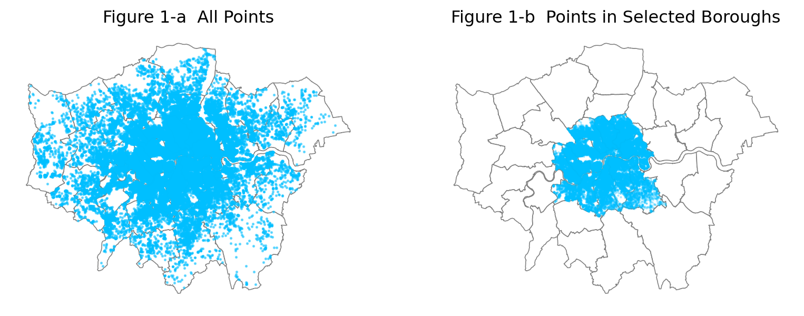
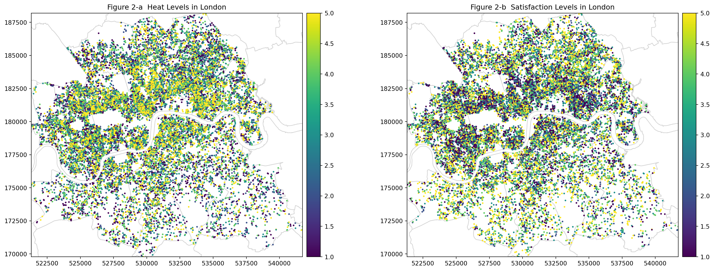
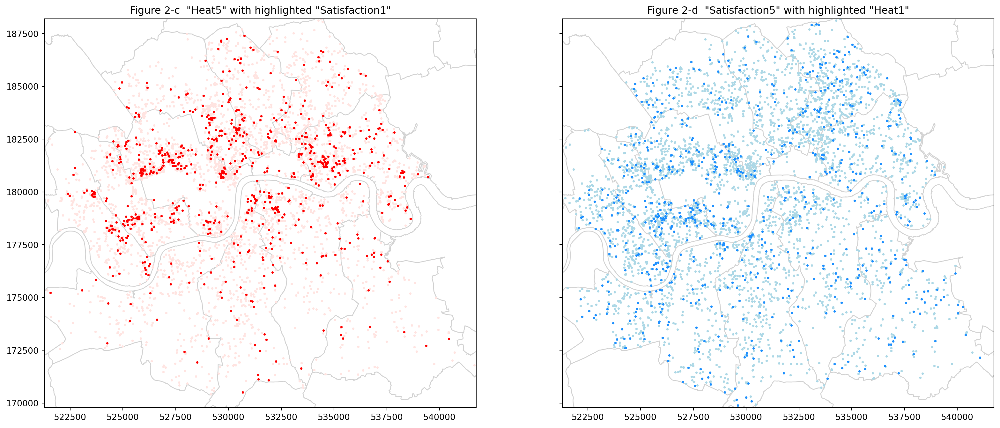
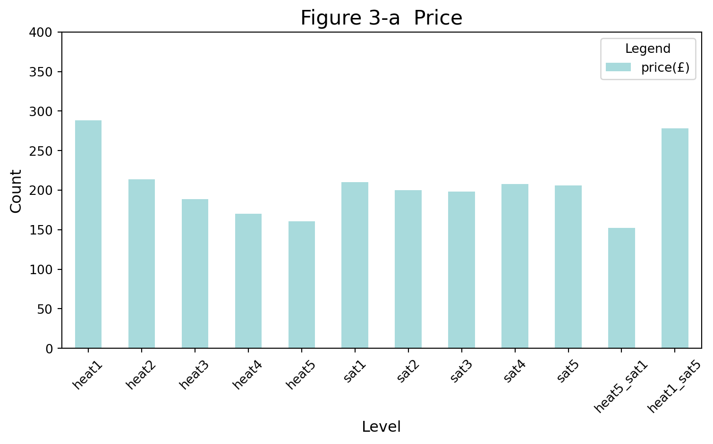
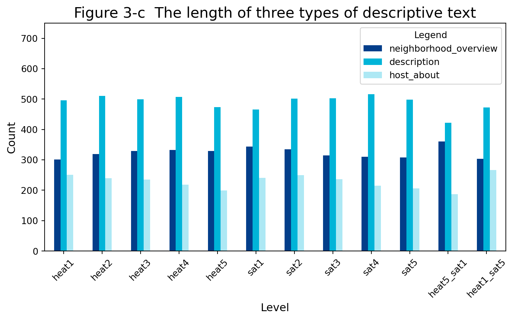

Rookie Programmers Group Project
Brief Group Reflection
| What Went Well | What Was Challenging |
|---|---|
| Great collaboration and division of workload within the group. | It was difficult to select topics and find other data sets. |
| The pace of work is good and it is basically completed in week 9. | Our original plan did not lead to the expected conclusion. |
Priorities for Feedback
Are there any areas on which you would appreciate more detailed feedback if we’re able to offer it?
We attempted to develop two rating criteria in our analysis, which required defining weights. But there are few references. In the urban planning industry, when similar situations are involved, definitions are sometimes defined by inviting experts to score. So for group work like ours, can we first find reasonable indicators based on current conditions, and adopt similar methods like experts score to optimize in the future if necessary and conditional?
In our analysis, we initially wanted to use NLP to analyze subjective descriptive text. However, in practice, we found that only using keyword frequency analysis cannot draw effective conclusions, and the skills we have mastered are not enough to complete it. Although we have adjusted the research direction later, what should we do if in some cases, a research does not reach a conclusion of obvious significance in the end?
Response to Questions
1. Who collected the data?
Insideairbnb website data(“Insideairbnb,” 2023) were collected by the Inside Airbnb project, with contributions from collaborators and partners.
The raw data were compiled from the Airbnb(“Airbnb,” 2023), which was collected by the company Airbnb, Inc.
2. Why did they collect it?
On the insideairbnb website (“Insideairbnb about,” 2023), they write:
“We work towards a vision where communities are empowered with data and information to understand, decide and control the role of renting residential homes to tourists”.
As for the company Airbnb, three considerations may arise:
Operational aspect: To assist users in making informed decisions.
Company aspect: Data collection plays a crucial role in analyzing Airbnb’s operational performance. With the gathered data, Airbnb can fine-tune its operational strategies.
Legal aspect: In compliance with diverse regulatory requirements, Airbnb must furnish information to the respective authorities as necessary.
3. How was the data collected? Insideairbnb collected data, which was a snapshot at a particular time, from Airbnb platform.
Insideairbnb collected data, which was a snapshot at a particular time, from Airbnb platform.
The data collected by Airbnb can be classified along two dimensions: the data source and the method of generation.
From host:
Objective data. From hosts but can be verified by images or qualifications. (Listing’s: latitude, property_type, etc. Host’s: host_name, host_location, etc.)
Produced during platform operation. Platform generates these data, but host behaviour determines their content. (Host_acceptance_rate, host_response_rate, etc.)
Subjective data. These subjective descriptions were provided by the host. Its content and tendency reflect the host’s preferences. (Description, neighborhood_overview, host_about, etc.)
From guest:
Objective data. When guests register an Airbnb account, they need to provide personal information. (Name, contact_details, payment_information, etc.)
Generated during platform operation. The platform created these data, but guest behaviour determines their content. (Number_of_reviews, first_review, etc.)
Subjective data. Based on guest’s preference. (Review_scores_accuracs, comments, etc.)
From platform:
Generated during platform operation. These data were automatically generated and user’s behavior has no impact on it. (Host_id, host_url, reviewer_id, etc.)
Platform does not proactively provide objective or subjective data.
4. How does the method of collection impact the completeness and/or accuracy of its representation of the process it seeks to study, and what wider issues does this raise?
Completeness:
Insideairbnb data is a snapshot of the Airbnb platform, it cannot reflect changing information.
Regarding the original data on Airbnb, if the collection relies on voluntary submissions (reviews from guests), it might not be possible to gather data from all relevant individuals. Self-selection bias could lead to incomplete data.
Accuracy:
Objective data is mostly accurate, but Airbnb anonymizes listing location. The location on the map will be offset by 0-150 meters. Airbnb anonymizes listings in the same building, making them appear “fragmented”(“Insideairbnb data-assumptions,” 2023).
Data generated by the platform might be accurate but can also be subject to technical errors. Data tampering, such as fake review or inflated booking figures, may introduce deceptive listing evaluation.
The Accuracy and completeness of subjective information depend on the provider’s skill and desire to deliver precise details. Even for listing descriptions, hosts with diverse professional experience may present them differently. Hosts with less expertise may overlook benefits or guest concerns. However, expert landlords can highlight desirable characteristics, while deceitful landlords may hide faults. Guests have varying histories and judgement criteria, therefore listing ratings are more subjective. One user may overlook a detail that another values, skewing the evaluation.
5. What ethical considerations does the use of this data raise?
Privacy and Security:
Privacy Concerns: Individual data, including names, contact information, and payment details, is sensitive. The collection, storage, and use of this data raises privacy concerns. Users should be informed about what data is collected and how it will be used and give consent, especially for identifying data. News sources say some landlords dislike the platform’s photo demand.
Data Security and Usage Control: Preventing unauthorised access and breaches is essential. Strong security measures to protect user data from cyberattacks are ethical. It’s also crucial to avoid misusing data obtained for one purpose without user consent. Avoid disclosing or using data for unknown purposes.
Bias and Discrimination:
The data collection and analysis may inadvertently create bias or overlook certain groups. Such as the feelings of groups lack willingness to comment.
Data collected from user reviews or host descriptions may reflect personal biases. This could lead to racial, gender, age, and other prejudice. Identifying and mitigating biases is essential for ethical data use.
The Matthew effect brought about by the popularity mechanism, such as Super_hosts. This inequality may result in popular listings being in short supply, while unpopular listings remain uninterested.
Distortion and Misleading:
Host capabilities may cause photo or description distortions, misleading listing status. This mismatch can make it hard for guests to assess the listing’s quality.
Fake photographs and reviews can deceive users during intentional deception. This can also lead to inaccurate data analysis. The platform must build up detection, elimination, and punishment systems.
Impact on Communities:
- When utilizing data for descriptions of communities, the produced data only offer a partial reflection of the status of certain communities, not encompassing all aspects. However, the release of these findings can have diverse impacts on the community, including external evaluations, rent fluctuations, effects on residents’ lives, and socioeconomic stratification.
6. With reference to the data (i.e. using numbers, figures, maps, and descriptive statistics), what does an analysis of Hosts and Listing types suggest about the nature of Airbnb lets in London?
In the analysis of the previous question, we noticed one of the peculiarities of insideairbnb data is the enormous amount of listings. On traditional platforms, the number of guests is usually on the order of magnitude of several for each business, while on Airbnb the situation is different.
In addition, for each listing, hosts need to provide a lot of subjective descriptive information. Obviously, both the issues of completeness and accuracy mentioned earlier can affect the order volume. The gap between specialized hosts and general hosts in this regard may be even greater.
This impact also leads to a disparity between the description of listings and their actual conditions. When booking on Airbnb, users pay attention to the rating, and listings with higher ratings should logically be more popular. However, “popularity” and “satisfaction” are two different standards in fact. There are houses with high ratings but less-than-ideal booking data, while other houses with average quality have high occupancy rates.
We hope to take London as an example and, through the study of listings, find patterns of features to improve listings with high satisfaction but low popularity, making them as popular as they deserve. This is fairer to hosts who carefully manage their properties and help guests efficiently identify good listings.
Before the analysis, it needs to be clarified that the impact of location on popularity is also obvious. Considering that most of London’s listings serve tourists, we focus on the areas with the highest density of attractions. Figure 1-a shows listings with reviews still available after 2019, about 88,000, and a high central density can be observed. Figure 1-b represents the core boroughs of London, with a reduced range but still about 60,000 listings. According to the distribution of London attractions, the differences in transportation convenience in these areas are not significant, minimizing the impact of location in the subsequent analysis.
For listings in this area, we have established two sets of rating standards for “popularity” and “satisfaction” to discover their distribution patterns.
- Popularity = 1 * 30_day_booking_rate + 10 * average_daily_review_count + 0.5 * superhost_or_not
The availability within 30 days usually reflects the number of nights not booked and can calculate the 30-day booking rate. However, listings with availability of 0 within 60 days need to be excluded because the longer unavailable days are usually set by the host as non-bookable. The average daily review count can be calculated based on the number of reviews and the the days between the first and last reviews. A superhost is an identification by the platform for high-popularity hosts. We set the weighting coefficient based on the concept of review rate, combined with insideairbnb’s assumptions (“Insideairbnb about,” 2023). Afterward, for listings that meet the conditions, they are evenly divided into five levels according to the score, with level 1 having the lowest popularity score and level 5 having the highest.
- Satisfaction = 1.5 * accuracy + 2 * cleanliness + 1 * check in + 1 * communication + 0.5 * location + 1 * value
Satisfaction weight refers to (Labazkin, 2019), and we use the overall score and item scores to be reweighted, giving higher weight to the items reflecting the listing itself. Similarly, a classification of 1-5 levels is carried out.
The number of filtered and classified listings is 23,114, and their distribution in the core area of London is shown in Figure 2. Figure 2-a shows a high overlap of high-popularity areas with tourist hotspots, such as Hyde Park, Regent’s Park, and the surrounding area of the Tower Bridge. Figure 2-b shows that the area with the lowest satisfaction also appears here. In other areas, popularity and satisfaction are more randomly distributed. Figure 2-c highlights the 4,622 listings with a popularity of 5, among which 774 have a satisfaction of 1, showing clustering in certain locations. Figure 2-d highlights the 4,623 listings with a satisfaction of 5, among which 776 have a popularity of 1, indicating that even in popular locations, there are many listings with low popularity but high satsfaction.


7. Drawing on your previous answers, and supporting your response with evidence (e.g. figures, maps, and statistical analysis/models), how could this data set be used to inform the regulation of Short-Term Lets (STL) in London?
Combining the previous classifications, we further analyze the listings to find factors related to hosts or listings that lead to inconsistencies or even reversals between popularity and satisfaction. We selected six items set by hosts to analyze the impact of host behavior. Figure 3 shows the relationship between the mean values of different items and different levels of listings. In addition to the mean values, the median or extremes also reflect similar trends. For clarity, only the mean values are plotted here.



Figure 3-a: The average price of Heat1_sat5 listings is the highest, indicating that price is a significant factor hindering people from placing orders. The average price of high-popularity and low-satisfaction listings is the lowest, indicating that many people are attracted by low prices, even if they are dissatisfied.
Figure 3-b: The mean reply rates for different levels are all above 90%, with little difference. The relationship between satisfaction and reply rate is not obvious. But the lower the acceptance_rate, the higher the satisfaction. This indicates that on the Airbnb platform, guests and hosts are mutually selective, and “picky” hosts often have better listings.
Figure 3-c: The analysis here focuses on the lengths of three descriptive texts. The description of the listing is the longest, then the surroundings, and lastly, the host’s self-introduction. There is not a significant change in these lengths between different groups, but interestingly, the higher the popularity, the shorter the self-introduction. May this mean that long with shorter self-introductions are less popular? Conclusions are difficult to draw based solely on length.
Focus on analyzing two extreme groups. In Heat5_sat1, both the description and self-introduction lengths are significantly smaller than Heat1_sat5, indicating that hosts with more descriptions are more likely to achieve high satisfaction. However, the description of the surroundings is the opposite; perhaps the high popularity location deserves more description. In fact, drawing effective conclusions through text length analysis is difficult. And using high-frequency keywords does not lead to effective conclusions as well. For example, the top three keywords are “room,” “space,” and “London.” Due to technological limitations, NLP analysis will be considered for future work.
Conclusion
Among the factors affecting the “mismatch of popularity and satisfaction,” we found that host behavior has a considerable impact. There may be significant differences between “professional hosts” and “hosts who meet the original intention of Airbnb” in terms of relevant abilities and awareness.
By identifying such mismatches, the Airbnb platform can optimize its supervision mechanism.
Penalties can be imposed on hosts who rely on unreal descriptions for marketing.
Further optimize the way listings are created, providing more multiple-choice questions rather than subjective questions.
In addition to spreading legal knowledge, host strategy tutorials or photo-taking advice can also be provided.
The previous analysis also shows that hotels with low scores and low prices are highly popular. It is necessary to admit that each price has its corresponding quality, but low scores mean that the quality has fallen below the customer’s expectations.
This may require the intervention of government regulations. For example, certain defects must be clearly described, and the description of certain items must correspond to facility standards. However, it should also be noted that Airbnb is more like a second-hand market compared to the B2C in the hotel industry. Their individuality and freedom must be protected. The regulations should serve as a safety-net mechanism. This ensures that the quality of each listing is predictable and provides guests with a personalized experience.
References
Alsudais, A. (2021) “Incorrect data in the widely used Inside Airbnb dataset,” Decision Support Systems, 141, p. 113453. doi: 10.1016/j.dss.2020.113453.
Bailey, N. and Minton, J. (2018) “The suburbanisation of poverty in British cities, 2004-16: Extent, processes and nature,” Urban Geography, 39(6), pp. 892–915. doi: 10.1080/02723638.2017.1405689.
Bivens, J. (no date) “The economic costs and benefits of Airbnb.”
Bosma, J. R. and Doorn, N. van (2022) “The Gentrification of Airbnb: Closing Rent Gaps Through the Professionalization of Hosting,” Space and Culture, p. 12063312221090606. doi: 10.1177/12063312221090606.
Deboosere, R. et al. (2019) “Location, location and professionalization: A multilevel hedonic analysis of Airbnb listing prices and revenue,” Regional Studies, Regional Science, 6(1), pp. 143–156. doi: 10.1080/21681376.2019.1592699.
Guttentag, D. A. and Smith, S. L. J. (2017) “Assessing Airbnb as a disruptive innovation relative to hotels: Substitution and comparative performance expectations,” International Journal of Hospitality Management, 64, pp. 1–10. doi: 10.1016/j.ijhm.2017.02.003.
Labazkin, D. (2019) “Exploring Airbnb Guest Reviews in London,” Medium. Available at: https://medium.com/@labdmitriy/exploring-airbnb-guest-reviews-in-london-682b45aba34e (Accessed: December 9, 2023).
Prentice, C. and Pawlicz, A. (2023) “Addressing data quality in Airbnb research,” International Journal of Contemporary Hospitality Management, ahead-of-print(ahead-of-print). doi: 10.1108/IJCHM-10-2022-1207.
Schaefer, M. and Tran, K. D. (2020) “Airbnb, Hotels, and Localized Competition.” Rochester, NY. doi: 10.2139/ssrn.3676907.
Smith, D. (no date) “Valuing housing and green spaces: Understanding local amenities, the built environment and house prices in London.”
Wachsmuth, D. et al. (no date) “The High Cost of Short-Term Rentals in New York City.”